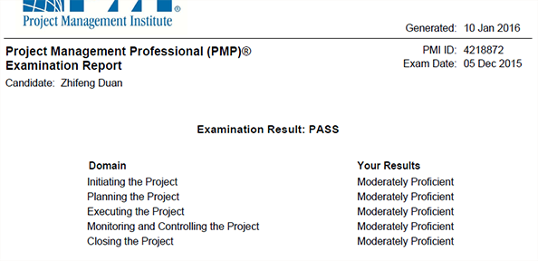

从开始备考PMP到考试结束，用一句话总结就是“痛并快乐着”。对于PMP的备考学习，培训老师一直在强调拿PMP备考当成一个项目去执行，那么现阶段就是项目收尾阶段，需要进行一次总结了。
我的备考经验主要有以下几点：
1、在听视频前一定要认真做好复习，不然老师讲的许多内容，都抓不到重点，也领会不了。
2、我一模的成绩并不理想，在一模前也没有去精读PMBOK，班主任老师和我沟通后，也使我认识到书本的重要性，每天定时抽出中午的时候，晚上2个小时的时间去精读PMBOK。
3、模拟题是一定要认真去做的，并且需要反复做，把做错的题记录下来，回归PMBOK，这样做不是记住题，而是要记住知识点。
4、有时间的话一定要参加小组活动，即使不能参加小组活动，也要和群里的老师、同学相互讨论、学习，这样即去除看书的枯燥，又能加深记忆。
5、ITTO真的很重要，真的要去背下来;计算题也一定要掌握。
6、认真阅读班主任的每一封邮件，这样才能督促自己，时刻的谨记时间、成本的重要性。
7、PMBOK书中的各种工具、定义的范围及使用的方法要牢记。
8、最重要的一条，就是要把整本书的知识点全部串起来。答题的时候，要能分析到题的要点。考的是哪个过程组，考的是哪方面的问题。
以上是我的学习及考试总结，过程比结果更重要。通过PMP系统、理论的学习，使我在工作中受益匪浅，目前实施的项目，有好多的工作方法都是以PMP的理论为基础的。
在此，我感谢卓越老师对我的热情指导，在此深表感谢。选择一家好的培训机构很重要，当然，自身的努力更重要。
